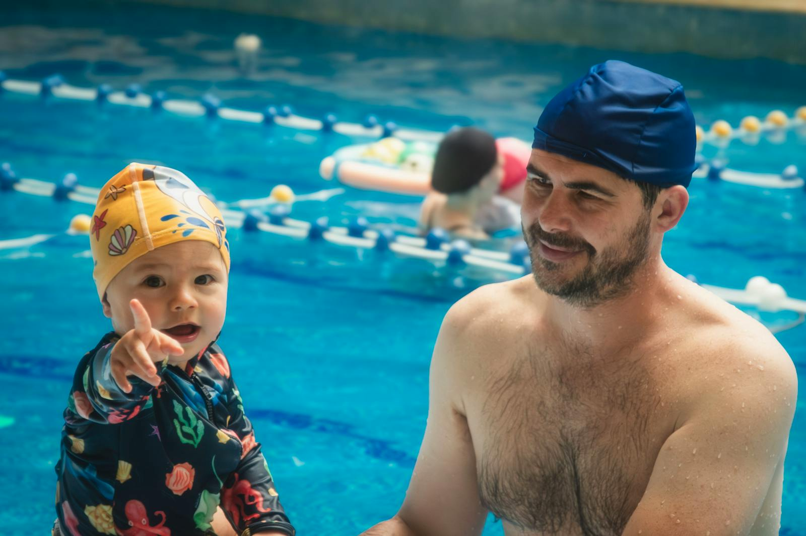

Turnos
Tres semanas intensivas en junio.
1.º turno
8 - 12 junio
2.º turno
15 - 19 junio
3.º turno
22 - 26 junio
Niveles y horarios
Niveles para aprender al ritmo adecuado.
Infantil
Vaso de enseñanza.
Iniciación
Calle 1.
Perfeccionamiento
Calle 2.
Turnos de tarde
17:00 - 18:00 y 18:00 - 19:00.

Inscripción
Solicita plaza en natación intensiva.
Precio único de 32 EUR por persona para 5 días, de lunes a viernes. Consulta disponibilidad de turnos antes de inscribirte si lo necesitas.